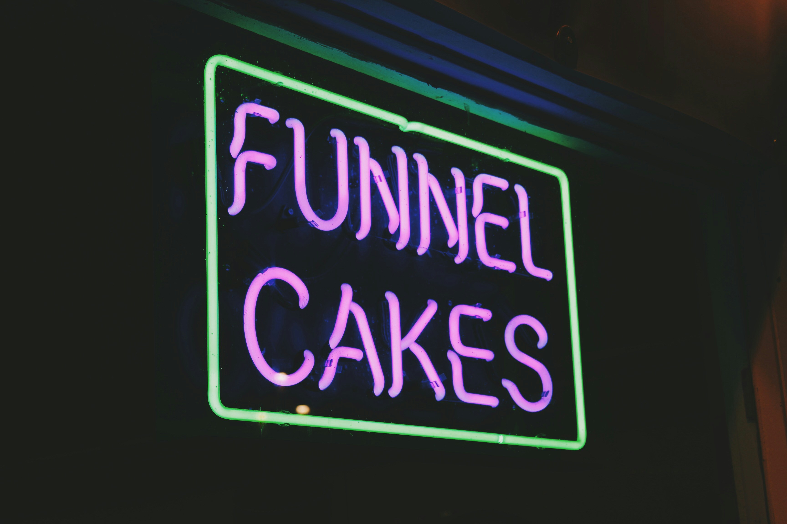

Classic Funnel Cakes
A 24-hour fermented Cake with a crackling crust and open crumb.
GH₵ 35
Baked with Love & Perfection
Golden Bakery is a neighbourhood bakery and café in Accra. We mill, mix and bake yummy cakes in full view of the counter — no shortcuts, no preservatives, just good flour and time.

Our story
Golden Bakery opened in 2014 as a single home oven and a weekend stall at the local market. Word spread about the bakery very fast, and by 2018 it had become bigger cakeshop that people buy cakes from during anniversary. Today the same starter culture from that first batch still leavens every loaf we bake.
What we bake

A 24-hour fermented Cake with a crackling crust and open crumb.
GH₵ 35
Laminated by hand, baked to order in small batches each morning.
GH₵ 18

Assorted berries on a white baked cake.
GH₵ 15
Reviews
"Best yummy cake I've had in Accra, hands down. I now walk past two other bakeries to get here."
— Ama K.
"The berries on the white cake sells out by 9am for a reason. Get there early or call ahead."
— Kojo A.
"Small shop, huge care. You can tell the difference in every cake bite."
— Efua D.
Get in touch
Hours: Mon–Sat, 7:00 AM – 7:00 PM